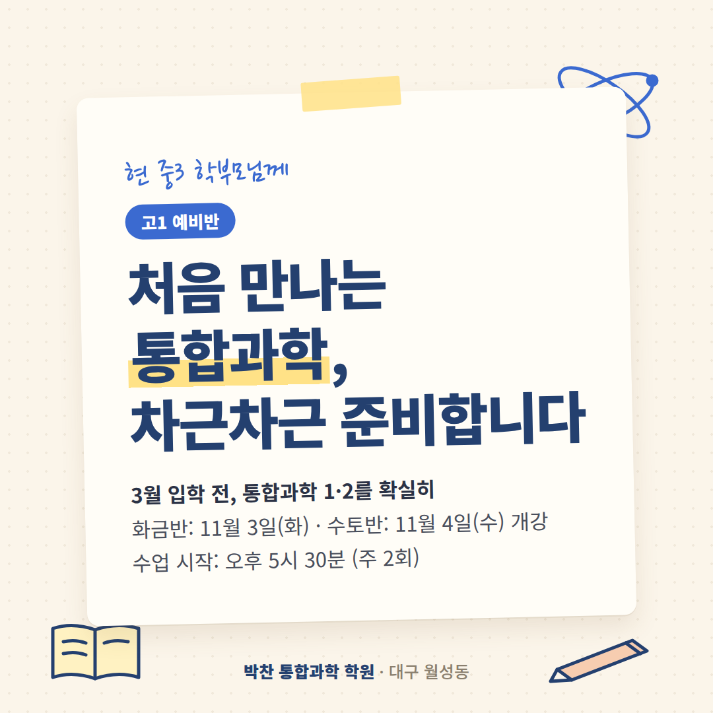
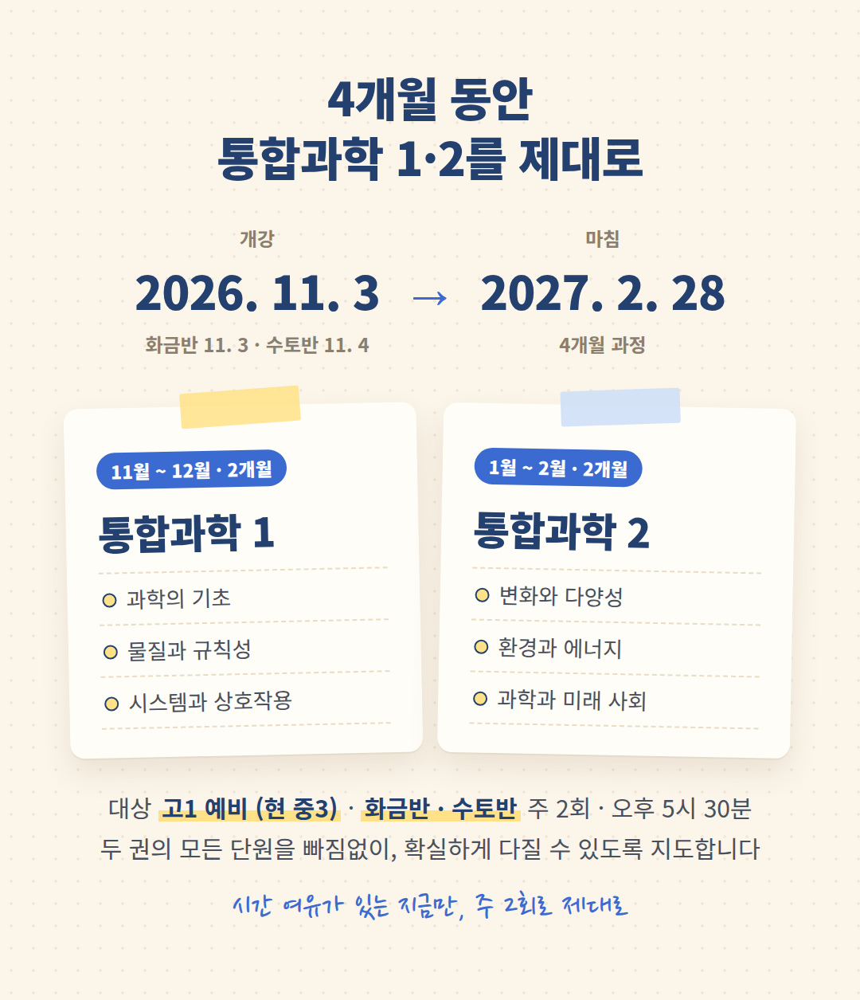
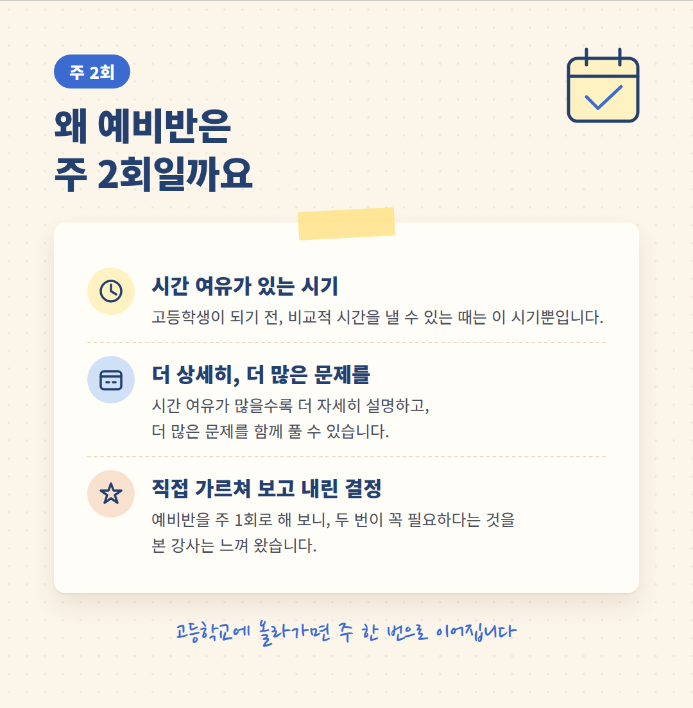
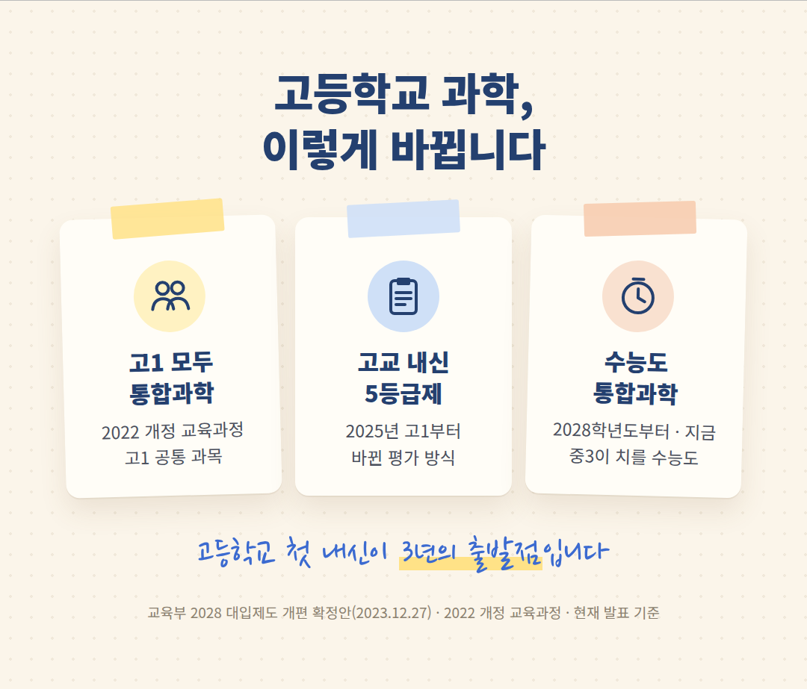
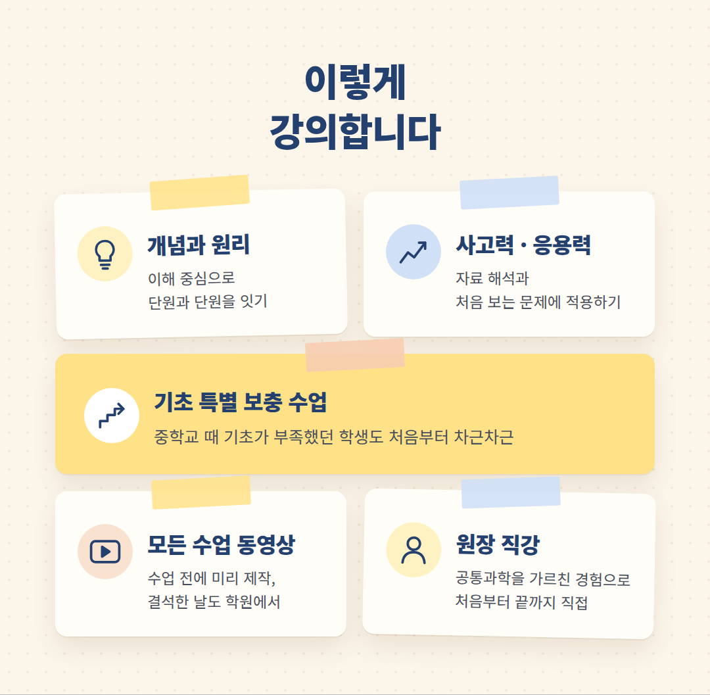
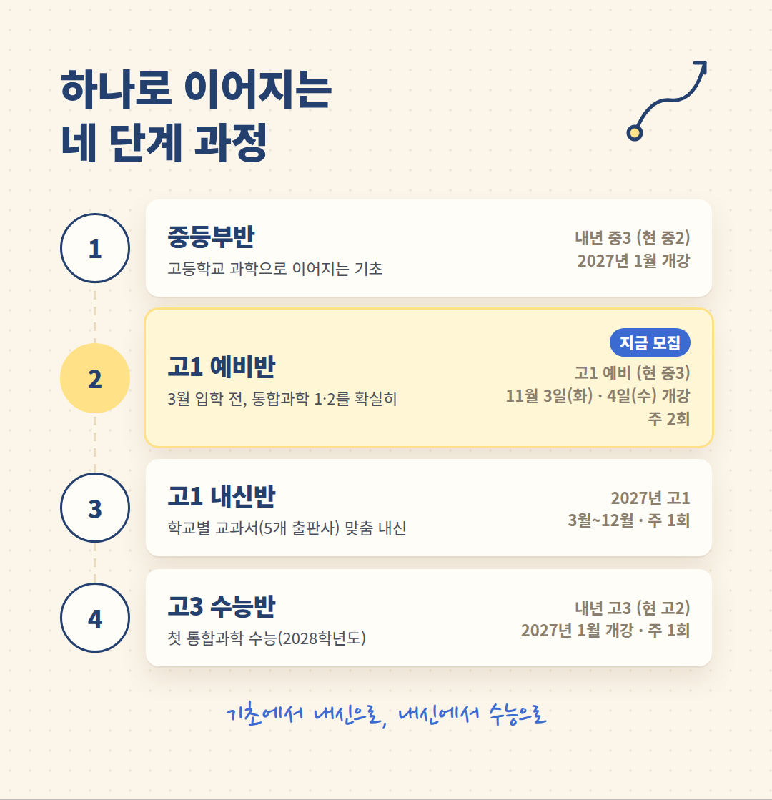

안녕하십니까.
대구 월성동 박찬 통합과학 학원입니다.
현재 중학교 3학년 자녀를 두신
학부모님께 인사드립니다.
내년 봄 고등학교에 올라가면
학생들은 처음으로 '통합과학'을 만나게 됩니다.
그 첫걸음을 차근차근 준비하는
고1 예비반을 안내해 드립니다.

3월 입학 전, 통합과학 1·2를 확실히 지도하겠습니다
| 화금반 | 2026년 11월 3일(화) 개강 |
| 수토반 | 2026년 11월 4일(수) 개강 |
| 수업 시작 | 오후 5시 30분 (주 2회) |
| 대상 | 고1 예비 (현 중3) |
| 기간 | 2027년 2월 28일까지 |
고등학교 통합과학은
통합과학 1과 통합과학 2, 두 권입니다.
이 두 권을 3월 입학 전까지
확실히 지도하겠습니다.

왜 예비반은 주 2회일까요
평소 강의를 해 보면, 시간의 여유가 많을수록 더 상세히 설명하고 더 많은 문제를 함께 풀 수 있었습니다.
주 1회 수업에도 나름의 장점이 있을 것입니다.
다만 저는 주 2회 수업으로 조금 더 여유로운 시간 속에서 다양한 지식을 전하고 문제 풀이를 하며, 더 큰 학습 효과를 거두고자 합니다.
그래서 시간의 여유가 있는
고1 예비반 때만
일주일에 두 번 수업합니다.
고등학교에 올라가면
고1 내신반과 고3 수능반은
일주일에 한 번밖에 하지 못합니다.

고등학교 과학, 이렇게 바뀝니다
· 교육과정 — 2022 개정에 따라 고1 학생은 모두 통합과학을 배웁니다.
· 내신 — 2025년 고1부터 5등급제로 바뀌었습니다.
· 수능 — 2028학년도부터 과학탐구는 통합과학 한 과목입니다. 지금 중3 학생들이 치를 수능도 현재 발표 기준으로 같은 체제입니다.
고1 첫 내신이
고등학교 3년의 출발점입니다.

이렇게 강의합니다
① 개념과 원리 위주의 이해 중심 강의
낯선 과학 용어도 뜻을 풀어, 단원과 단원이 자연스럽게 이어지도록 가르칩니다.
② 사고력 · 응용력 향상을 돕는 문제 풀이
자료를 해석하고, 처음 보는 상황에 개념을 적용하는 문제를 함께 풉니다.
고3 수능까지 이어지는 생각하는 힘을 기릅니다.
③ 기초가 부족한 학생을 위한 특별 보충 수업
중학교 때 과학 기초가 부족했거나 성적이 아쉬웠던 학생을 위해 특별 보충 수업을 준비해 두었습니다.
처음부터 차근차근 따라올 수 있도록 돕겠습니다.
④ 모든 수업은 동영상으로
모든 수업은 수업 전에 동영상으로 제작되어 있습니다.
강의 후 부족하다고 느낀 부분이나 결석한 날의 수업도 학원에서 다시 보며 충분히 이해할 수 있습니다.
⑤ 원장 직강
통합과학의 전신인 공통과학을 가르쳤던 경험과 오랜 입시 지도의 경험으로, 처음부터 끝까지 제가 직접 가르치고 상담합니다.

하나로 이어지는 네 단계 과정
박찬 통합과학 학원의 반은
따로 떨어져 있지 않습니다.
기초 → 내신 → 사고력·응용력 → 수능
하나의 흐름으로 이어집니다.
| 중등부반 | 현 중2 (내년 중3) · 2027년 1월 개강 고등학교 과학으로 이어지는 기초 |
| 고1 예비반 지금 모집 | 현 중3 · 11월 3일(화)·4일(수) 개강 · 주 2회 3월 입학 전, 통합과학 1·2를 확실히 |
| 고1 내신반 | 2027년 고1 · 3월 ~ 12월 · 주 1회 학교별 교과서(5개 출판사)에 맞춘 내신 대비 |
| 고3 수능반 | 현 고2 (내년 고3) · 2027년 1월 개강 · 주 1회 첫 통합과학 수능(2028학년도) 대비 |
중등부반과 고3 수능반은 개강에 맞춰 다시 자세히 안내해 드리겠습니다.

일주일 무료 수강
먼저 일주일 들어 보시고
등록을 결정하셔도 됩니다.
수업이 아이에게 맞는지
직접 확인해 보십시오.
① 상담 전화 또는 내원
② 수강 예약
③ 일주일 무료 수강
④ 등록 결정
오시는 길
대구 달서구 조암로 25
그루빌딩 501호 (월성 CGV 옆)
상담 문의 053-213-3577
처음 만나는 통합과학,
아이가 자신 있게 시작할 수 있도록
정성껏 준비하겠습니다.
편하게 전화 주십시오.
감사합니다.
박찬 드림
남교입 제2019-115호 · 교습비(월) / 총 교습시간
중등부 21만 원 / 1,042분 · 26만 7,000원 / 1,303분
고등부 22만 원 / 912분 · 31만 7,000원 / 1,303분